Meddbase is a complex, multi-layered EMR system, capable of accommodating a wide variety of workflows and business models ranging from small practices, straightforward setup and only a couple of people using the application, through to global enterprises with thousands of users and nuanced workflows and business requirements.
Meddbase provides a high number of configuration options allowing the application to adapt to complex business scenarios, as well as a host of default settings that it can fall back on when complexity is minimal.
Meddbase can be and is used in Primary Care, Secondary Care as well as in Occupational Health.
What is the purpose of the article?
This article is the 5th in a series of articles providing overview and details of setup and configuration steps required for Practice Management, which focuses on the application of the Meddbase system in Primary and Secondary Care.
Sections: Personal Details, Security, Account, Specialist/GP, NHS Details, Employer, School, Legal, Paper file, Employee Details, GP Service, NHS GP Service, Next of Kin, Insurance Company, Contact Info, Home Address, Work Address, Gender Identity and Pronouns.
Companies
A company in Meddbase is an organisation's record.
A company has a Type:
Employer - this company type should be selected for any employer company record and allows creating an employer-employee relationship on a Patient Record (Employer is the Preferred Payer). When this type is selected, the Occupational Health panel becomes available, where OH-specific settings are available for the company.
External - this company type is used primarily for company records that are used for administrative purposes. These include being set as employer/billing companies for external clinicians, or other external supplier companies that you may want to use as part of the Stock Control process. Additionally, can serve as a catch all for companies that don't meet neatly fit into another category
Insurer - this company type should be selected for any insurance company record and allows creating an patient-insurer relationship on a Patient Record. Companies of this type can be marked as 'Shared with patient' to allow patients to set specific insurance companies as their insurer of choice via the Patient Portal. Also allows insurer specific settings for the Healthcode integration to be recorded.
Internal - any internal type company can be a potential billing company. Typically the chamber company (the Clinic) is the default billing company. Subsidiaries can also be internal companies. Furthermore, a Billing Company can be created as an internal company and be used to charge the chamber (the Clinic) on behalf of self employed clinicians.
Legal / Solicitor - some patients will have work/services consumed paid for by a legal company or solicitor as part of Medico-legal work.
NHS Commissioner - NHS Commissioners govern multiple NHS Surgeries, and where NHS bodies should be charged for work, this company type can be a debtor associated with a patient record. Linking an NHS Surgery to a patient record can automatically detect that surgery's governing commissioner and set it as the patient's payer.
NHS Surgery - this company type is used to link patient records to their NHS GP's surgery practice. as described above, can also be linked to NHS commissioners for billing purposes. Clinicians can also be recorded as being employed by an NHS surgery which will allow that surgery to be automatically linked to a patient record, when the relevant GP is associated with the patient as their 'NHS GP'.
Pharmacy - this company type defines the list of companies which can have prescriptions sent to them via the e-Fax integration.
Practice - this company type is used to associate medical companies with patient records. Practices can have a specialism set, and when this is done, a new section can be added to the Patient Details page for companies of that specialism. For instance, a practice with specialism Ophthalmology could be created, and patients could then have an Ophthalmology Practice linked to their record for the purposes of audit, reporting, and communications.
School - patients can be linked to School's/Universities for the purposes of billing, where companies of that type are funding work/services consumed on behalf of patients.
The selected type impacts on how the record is consequently used and can relate to a patient, e.g. an Employer company can be set a the Payer on a patient record.
Company records themselves can also have a range of relationships other records such as documents, contacts, referrals, invoices and payments.
To add a company:
From the Start Page click Add company.
Populate the registration page with relevant details, with the minimum information being Name and Type.
Details
This section allows capturing basic company details:
Code - an alphanumeric code for the company, e.g. Co 203, can be entered here. The code can be used for reporting purposes and/or in document templates using {Company.Code} or {Patient.CompanyType.Code}.
Name - the name of the company.
Phone - company phone number.
VAT no. - company VAT no.
Type - company type, selected accordingly, as per the explanation above.
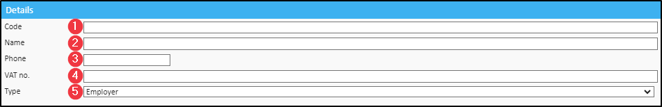
Referrals
This section can be used as part of a larger setup for Referrals in your chamber.
Referrable - this checkbox when ticked, makes the company visible in the Referral Network in your chamber. Click here for more details on Networks.
Referral contact - when referring to a company via email, the Referral Contact will be the default recipient for the message. To select a contact it must first be created under Company Details > Contacts.
Specialisms - clicking Modify allows selecting the specialism(s) for the company from a hard-coded list. A company can have multiple specialisms. Click here for more details.
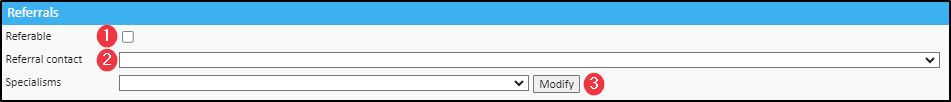
Address
This section allows capturing the company address.
Click in the address box.
In address search window type in the address manually or use the Address lookup by postcode* system feature.
*To use the feature, it must be enabled under Admin > Configuration > System features. Please speak reach out to the Client Account Management team on accountmanagement@meddbase.com before enabling any system feature.
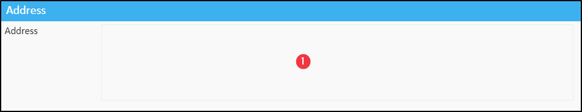
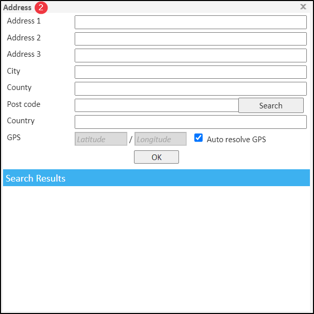
Billing Address
This section allows capturing the company billing address.
Click in the address box.
In address search window type in the address manually or use the Address lookup by postcode system feature.
Occupational Health
This panel is only available when Employer type is selected for a company.
Sign up code for new managers - allows new managers hired by this company to self-register via the Occupational Health Referral Portal and their records will also be created in Meddbase.
Charge band for new manager - determines which charge band (contract) a new manager will belong to/be governed by. The Charge Band must first be configured for this company under Admin > Billing Rules. Click here for more details.
Referral Admin Team - allows selecting a role group managing referrals from this employer. Click here for more details on Role Groups.
Way to review report by employer - allows selecting an automatic or manual way for this employer to review the OH report.
Way to review the report by patient - allows selecting an automatic or manual way for the referred patients to review the OH report. The patient report review step can also be disabled for this company.
Health and Safety email - allows a hard-coded message to be sent to a selected email recipient when a new absence caused by a work accident is logged (relevant in the Absence Management workflow).
Allowed external IP addresses - allows managers working for this company to log in to the Referral Portal only from the listed IP addresses.
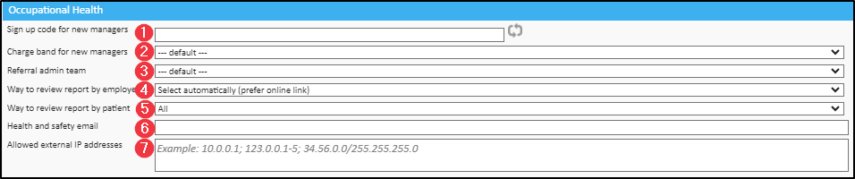
NHS Details
This panel is only available when NHS Surgery type is selected for a company and allows searching and selecting the NHS commissioner (another company record with NHS Commissioner type selected) that this NHS Surgery belongs to.
Click in the NHS commissioner box.
Click Change, search for an NHS Commissioner type company and click on the search result.
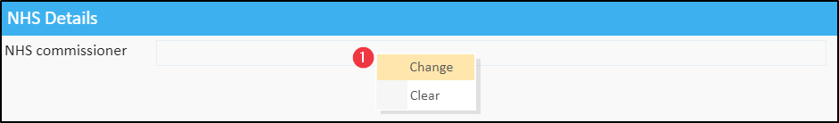
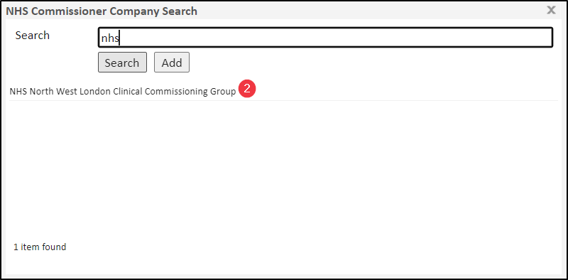
Bank Details
This section allows capturing the company bank details. These details can be reported on and they can be automatically queried using template code, e.g. {Company.BankName}.
Meddbase does not interact with bank accounts.
Bank name - the name of the company bank.
Branch - the specific branch of the company bank.
Account no. - company bank account number.
Sort code - company bank account sort code.
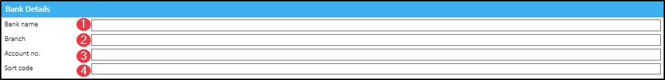
Accounts
This section allows configuring the following settings:
1. Primary billing contact - the Primary Billing Contact's email address will be used by the system when emailing an invoice marked as Sent to the respective Debtor Company. Prior to selection, the Billing Contact details need to be added on the Company Details page under Contacts.
2. Invoice grouping by time* - this setting forces all Billing Items consumed by a Debtor Company within a selected time frame onto 1 invoice, e.g. 5 patients paid for by Insurance Company "My Insurance Co.", consuming 10 appointments within the specified time frame, will result in 1 invoice being raised, containing 10 billing items for all 5 patients. The invoice's status will remain 'Not Sent' until the specified cut of date, i.e. 1 day, week, months etc.
When this box is checked it implies grouping by account. In other words, the Invoice grouping by account ceases to have any effect.
3. Invoice grouping by account* - this setting forces all Billing Items consumed by individual patients onto separate invoices per patient, e.g. 2 Self-Pay patients consuming 1 service each for 10 consecutive days will result in 2 invoices being raised (1 for each patient), with each invoice containing 10 billing items consumed by the respective patient.
4. Allow default invoice templates - this setting allows the system to use generic/default invoice template for printing/email attachments for the respective charging company. All invoice templates should be set up as Document templates in the Meddbase Template system (click here for more details on Templates) Default Invoice Templates should be added to one of the (default) document template types under Templates > System Templates, so either Invoices - Company (default) or Invoices - Patient (default)
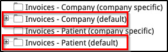
5. Credit note template - this dropdown allows selecting a template for Credit Note printing for the respective company. The template(s) should be set up in the Meddbase template system under Credit Notes document type.
6. Account manager - allows a specific person to be assigned as an Account Manager (most relevant for Employers) so they can receive emails. This has no functional impact on the company's accounts.
7. Customer type - a reportable field populated from the Customer Type Common Catalogue. Also available as a Template Code.
8. Payment terms - a reportable field populated from the Payment Terms Common Catalogue. Also available as a Template Code.
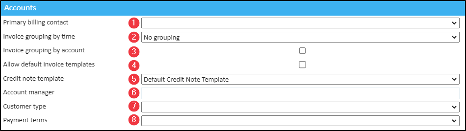
*The above settings related to Invoice Grouping will yield the desired results when applied/switched on or off, on the relevant Company's Details page, depending on the patient's Payer (or Preferred Payer) setting, i.e. for Self-Pay Patient invoices to be grouped by time or account, the relevant settings need apply on the Creditor Company (the chamber) Details page. For patients paid for by 3rd parties, e.g. Insurer or Employer, the settings need apply on the respective Insurer's or Employer's Details page. Invoice grouping by time and Invoice grouping by account settings should not be used simultaneously.
Disclaimer
This section allows creating Invoice and Email disclaimer messages.
Invoice disclaimer - this field allows creating a message. This message can be queried, e.g. in document templates, using {Company.InvoiceDisclaimer} template code.
Email disclaimer - this field allows creating a message. This message can be queried, e.g. in document templates, using {Company.EmailDisclaimer} template code.
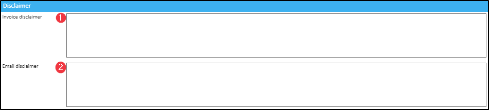
Healthcode
This section allows configuring the following settings:
Insurer code - this option only applies to insurers. The insurer code is specified by Healthcode and uniquely identifies each insurer.
Claim as hospital - this option only applies to internal companies. Some insurers require some billing companies to be classified as a hospital for electronic invoicing. If this company may invoice an insurance company that requires this classification then check the box 'Invoice as hospital'. When this option is selected a 'discharge reason' may be required for some invoices.
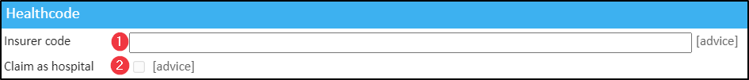
Logo
This section allows uploading a logo image* for the company.
Add/Replace - clicking this button allows selecting the logo image from your computer.
Remove - clicking this button allows removing the currently selected logo image.
*The logo should meet the following criteria: max height of 300px, max width of 300px. Furthermore, the image must be of one of the following file types: jpg, jpeg, png or bmp.
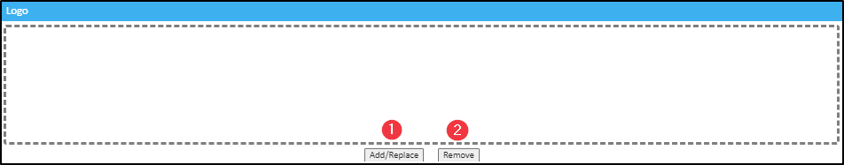
Patient Defaults
This section allows configuring the following settings:
Policy - when patients are added as this company's payee in Meddbase or self-register via the Patient Portal using an invite code, this dropdown allows selecting the Patient Certificate they will be assigned to.
Charge band - when patients are added as this company's payee in Meddbase, this dropdown allows selecting the Charge band they will be assigned to.
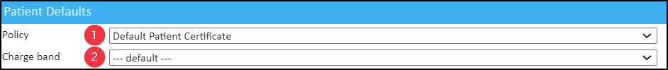
Patient Portal*
This section allows configuring the following settings:
Shared with patient - this checkbox when ticked on an Insurance company details page will add the company to the list of insurers patients can choose their insurer from on the Patient Portal, when self-registering or managing their existing portal account.
Require two-factor authentication - when this company is a patient's preferred payer, and the Charge Band the patient is assigned to is Enabled for online booking, the patient can access the Patient Portal. This dropdown allows configuring the 2FA requirement for logging in. The options are as follows:
Use chamber default - this option when selected means that the chamber's default setting will apply to this company and its payees. The default chamber 2FA requirement can be set in Admin > Configuration > Online portal > Require two-factor authentication.
Required - this option when selected means that 2FA will be required for this company's payees logging into the Patient Portal regardless of the chamber default setting.
Not required - this option when selected means that 2FA will not be required for this company's payees logging into the Patient Portal regardless of the chamber default setting.
Provide Departments and Divisions in Registration - when patients self-register as this company's payees via the Patient Portal using an invite code, this checkbox when ticked will allow these patients to select the Department and Division they work in during registration. Departments and Divisions for a company can be defined in Admin > Common Catalogues.
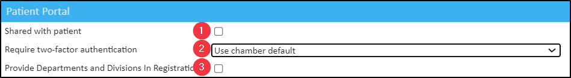
*The Patient Portal is an optional add-on for our customers and is available on request for an additional fee. Contact Support to add this service.
Patients
A Patient in Meddbase is the recipient of medical services.
In Meddbase a patient record has relationships with many other features such as appointments, documents, medical records, cases, referrals, absences, invoices, tasks, Occupational Health, contacts and companies.
To add a Patient Record:
From the Start Page click Add patient.
On the Add new patient capture the relevant details about the patient, with the minimum information being Name and Surname and Date of birth.
Personal Details
This section allows capturing the following details:
Title - this field allows selecting the patient's title from a dropdown, e.g. Mrs, Mr etc. Additional titles can be added in Admin>Common catalogues > Titles.
Name - this field allows typing in the patient's first name. This field is mandatory*.
Surname -this field allows typing in the patient's surname. This field is mandatory.
Middle name(s) - this field allows typing n the patient's middle name(s).
Sex - this field allows selecting the patient's sex. This field defaults to 'Unknown'.
Date of birth - the field allows typing in the patient's date of birth. This field is mandatory.
New patient - this checkbox when ticked will display 'New patient' on an appointment block on the Side-by-side Schedules and/or Room schedules. The box is automatically unticked when an appointment is arrived.
Status - this dropdown allows setting the patient's record status:
Active - default status. When searching for patients via Find patient option on the Start Page the default Status search parameter is 'Active'.
Deleted - this status means that the patient's Patient Portal access is removed. When searching for patients via Find patient option on the Start Page this record can be found by changing the Status search parameter to 'Deleted'. Permitted users can Restore deleted patient records.
Deceased -
Referrer - this field allows selecting the patient's referrer or 'how did you hear about us' value from a dropdown, e.g. Google Search, Work of Mouth etc. Referrers to choose from can be added in Admin > Common catalogues > Referrers.
Ethnicity - this field allows selecting the patient's ethnicity from a dropdown. The list of ethnicities is hard-coded.
Religion - this field allows selecting the patient's religion from a dropdown. The list of religions is hard-coded.
Marital status - this field allows selecting the patient's marital status from a dropdown. The list of marital statuses is hard-coded.
Details - this free text field allows adding additional relevant details about the patient.
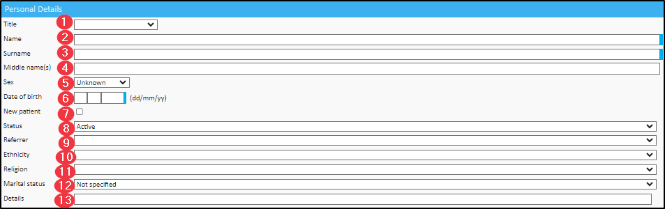
Security
This section allows selecting the following options:
Chamber -
Policy - this dropdown allows selecting the Patient Certificate this patient will be under. If there is only 1 Patient Security Policy in the chamber, it will be selected here automatically*.
*If the Combined Patient Policies and Patient Directory features are enabled in the chamber, the user will have to select the Patient Certificate even if there is only one.
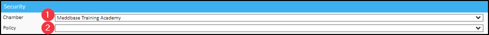
Account
This section allows selecting the following options:
Payer - this dropdown allows selecting the patient's default Payer. The options are:
Employer - selecting this option means that an Employer type company is the patient's preferred/default Payer. The Employer* section of the Personal Details page allows selecting the specific employer and the employer's charge band.
Insurance Company - selecting this option means that an Insurer type company is the patient's preferred/default Payer. The Insurance Company* section of the Personal Details page allows selecting the specific insurer and the insurer's charge band**.
Legal - selecting this option means that an Legal/Solicitor type company is the patient's preferred/default Payer. The Legal* section of the Personal Details page allows selecting the specific legal entity and the entity's charge band**.
NHS Commissioner - selecting this option means that an NHS Commissioner type company is the patient's preferred/default Payer. The NHS Commissioner* section of the Personal Details page allows selecting the specific NHS Commissioner and the Commissioner's charge band**.
Other Account - selecting this option means that another patient or a company is the patient's preferred/default Payer, however it is still the Patient charge band (see point 4) that will determine eligibility, pricing and other rules that apply to this patient.
Patient - selecting this option means that this patient is self-pay and they will be the default debtor on invoices. See point 4.
School - selecting this option means that a School type company is the patient's preferred/default Payer. The School* section of the Personal Details page allows selecting the specific insurer and the insurer's charge band**.
Other account - clicking in this field allows searching for another patient or company, who will be the patient's default payer (debtor on raised invoices), however it is still the Patient charge band (see point 4) that will determine eligibility, pricing and other rules that apply to this patient.
Billing company - this dropdown allows selecting the default billing company (internal company) for invoices raised for this patient, irrespective of who the Payer is. The chamber default creditor/billing company can be selected in Admin > Configuration > Accountancy > Default creditor (billing company).
Patient charge band - this dropdown allows selecting the patient's self-pay charge band. Self-pay charge bands can be configured in Admin > Billing Rules > Chamber Company
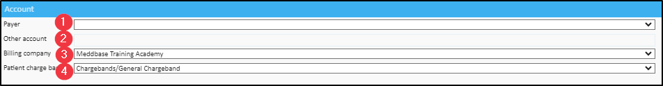
*If a particular section is not visible, navigate to Layout > Unlock Layout for Editing > Layout > Layout Sections > Section Name (click to add to layout) > Layout > Lock Layout (to save).
** 3rd party charge bands can be configured in Admin > Billing Rules > Add Companies > search for the respective 3rd party company and click to add to view.
Specialist / GP
This section allows capturing the following details:
GP - clicking in this field allows searching for Clinician records where the record's Referral Specialism(s) is or includes GP Service. Associating a GP record to this patient's record allows for quick email communication with the GP, as well as utilising Template Code, e.g. {Patient.Gp.FullName}, to query the GP's details in Document/Email/SMS Templates.
Specialist - clicking in this field allows searching for Clinician records.Associating a Clinician record to this patient's record allows for quick email communication with the Clinician, as well as utilising Template Code, e.g. {Patient.Specialist}, to query the Clinician's details in Document/Email/SMS Templates.
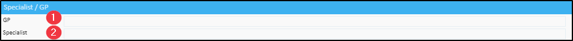
NHS Details
This section allows capturing the following details:
NHS commissioner - clicking in this field allows searching for NHS Commissioner type company records and selecting the relevant one.
NHS charge band - this dropdown allows selecting the NHS Commissioner's charge band to be used. The NHS Commissioner can be the patient's default payer or can be selected as the payer ad-hoc.
NHS number - this field allows capturing the patient's NHS number.
NHS surgery - clicking in this field displays a list of NHS Surgery type companies and allows selecting the relevant one. If the NHS Surgery record is associated with an NHS Commissioner, that Commissioner will be auto-populated in the field described in Point 1.
NHS GP - clicking on this field displays a list of Clinician records where the record's Referral Specialism(s) is or includes NHS GP Service.
Practice ODS code - this field displays the practice ODS code, which is a unique code generated by the NHS to identify a healthcare organisation.
Surgery phone - this field will be auto-populated if an existing company is selected in Pont 4, and that company record includes a phone number. Alternatively, the phone number can be entered manually.
Surgery address - this field will be auto-populated if an existing company is selected in Pont 4, and that company record includes an address. Alternatively, the phone number can be entered manually.
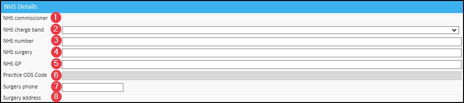
Employer
This section allows capturing the following details:
Company - clicking in this field allows searching and selecting the patient's specific Employer type company. This company can be the patient's default payer or can be selected as the payer ad-hoc.
Contact - this dropdown allows selecting a Contact for the patient's employer. This contact will be available when sending manual emails from this patient's record page. The Employer contact details can also be queried in Document/Email/SMS Templates by utilising Template Code, e.g. {Patient.EmployerContactName}. Company contacts can be added in Company Details page > Contacts > New Contact.
Employee no. - this fee text field allows capturing the patient's employee number. This entry can also be queried in Document/Email/SMS Templates by utilising Template Code: {Patient.EmployeeNo}.
Cost code - this free text field allows capturing the employer's Cost Code. The information can be reported on.
Charge band - this dropdown allows selecting the patient's employer charge band. The employer charge band(s) can be configured in Admin > Billing Rules > Add Companies > search for the respective employer company and click to add to view.
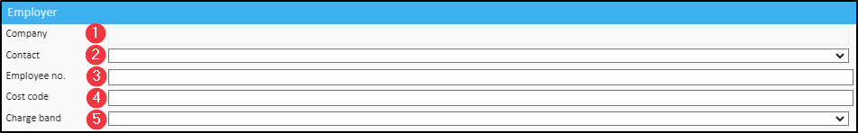
School
This section allows capturing the following details:
Company - clicking in this field allows searching and selecting the patient's specific School type company. This company can be the patient's default payer or can be selected as the payer ad-hoc.
Contact - this dropdown allows selecting a Contact for the patient's school. This contact will be available when sending manual emails from this patient's record page. Company contacts can be added in Company Details page > Contacts > New Contact.
Details - this free text field allows capturing additional details about the patient's school.
Charge band - this dropdown allows selecting the patient's school charge band. The school charge band(s) can be configured in Admin > Billing Rules > Add Companies > search for the respective school company and click to add to view.
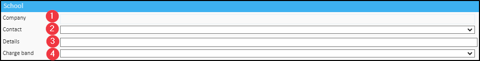
Legal
This section allows capturing the following details:
Company - clicking in this field allows searching and selecting the patient's specific Legal/Solicitor type company. This company can be the patient's default payer or selected as the payer ad-hoc.
Contact - this dropdown allows selecting a Contact for the patient's legal entity/solicitor. This contact will be available when sending manual emails from this patient's record page. Company contacts can be added in Company Details page > Contacts > New Contact.
Details - this free text field allows capturing additional details about the patient's legal entity/solicitor.
Charge band - this dropdown allows selecting the patient's legal entity/solicitor charge band. The legal entity/solicitor charge band(s) can be configured in Admin > Billing Rules > Add Companies > search for the respective legal entity/solicitor company and click to add to view.
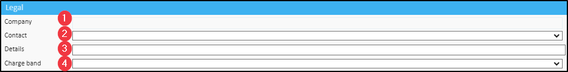
Paper file
This section allows capturing the following details:
Location - this free text field allows entering the physical location of the patient's paper file on the clinic's premisses or otherwise.
Employee Details
This section allows capturing the following details:
Employee type - this dropdown allows selecting the employee type for this patient, e.g. Permanent Staff, Temporary Staff. Employee Types can be added in Admin > Common Catalogues > Employee Types > +New employee type.
Employee status - this dropdown allows selecting the employee status for this patient, e.g. Active, On Leave. Employee Statuses can be added in Admin > Common Catalogues > Employee Statuses > +New employee status.
Department - this dropdown allows selecting the employee department for this patient, e.g. Operations, Shop Floor, Management. Employee Departments can be added in Admin > Common Catalogues > Employee Departments > +New employee department.
Division - this dropdown allows selecting the employee division for this patient, e.g. East, West. Employee Divisions can be added in Admin > Common Catalogues > Employee Divisions > +New employee division OR Admin > Common Catalogues > Employee Departments > +New employee department. > +New division
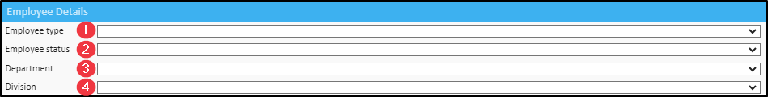
GP Service
This section allows capturing the following details:
Name - clicking in this field displays a list of Practice type companies, where the record's Referral Specialism(s) is or includes GP Service. Alternatively, this field allows capturing the name of the patient's GP Service manually.
Contact - this free text field allows capturing a contact for the patient's GP Service.
Phone - this free text field allows capturing a phone number for the patient's GP Service.
Email - this free text field allows capturing an email address for the patient's GP Service.
Address - the address will be auto-populated if an exiting Practice type company is selected in Point 1, and that record has an address captured. Alternatively, clicking in this field opens the address search window where you can type in the GP Service address manually or use the Address lookup by postcode system feature.
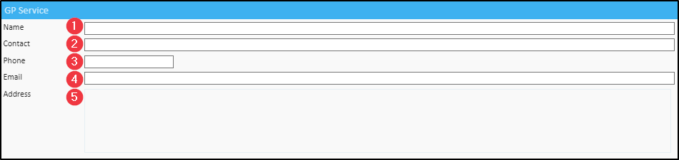
NHS GP Service
This section allows capturing the following details:
Name - clicking in this field displays a list of Practice type companies, where the record's Referral Specialism(s) is or includes NHS GP Service. Alternatively, this field allows capturing the name of the patient's NHS GP Service manually.
Contact - this free text field allows capturing a contact for the patient's NHS GP Service.
Phone - this free text field allows capturing a phone number for the patient's NHS GP Service.
Email - this free text field allows capturing an email address for the patient's NHS GP Service.
Address - the address will be auto-populated if an exiting Practice type company is selected in Point 1, and that record has an address captured. Alternatively, clicking in this field opens the address search window where you can type in the NHS GP Service address manually or use the Address lookup by postcode chargeable feature.
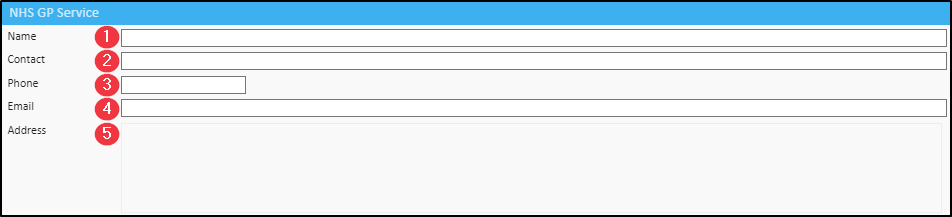
Next of Kin
This section allows capturing the following details:
Name - this free text field allows capturing the first name of the patient's Next of Kin.
Surname - this free text field allows capturing the surname of the patient's Next of Kin.
Relationship - this free text field allows capturing the Next of Kin's relationship to the patient, e.g. Wife, Husband etc.
Email - this free text field allows capturing the email address of the patient's Next of Kin.
Home tel. - this free text field allows capturing the home telephone number of the patient's Next of Kin.
Work tel. - this free text field allows capturing the work telephone number of the patient's Next of Kin.
Mobile - this free text field allows capturing the mobile number of the patient's Next of Kin.
Use home address - this box when ticked will populate the Next of Kin's address with the patient's home address details.
Address - the address will be auto-populated with the patient's home address details if the Use home address box is ticked. Alternatively, clicking in this field opens the address search window where you can type in the NHS GP Service address manually or use the Address lookup by postcode chargeable feature.
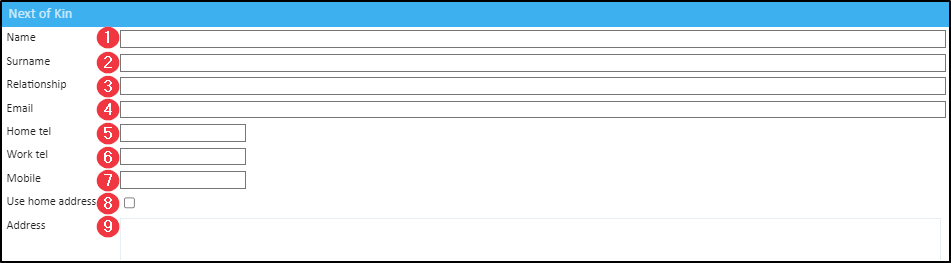
Insurance Company
This section allows capturing the following details:
Company - clicking in this field allows searching and selecting the patient's specific Insurer type company. This company can be the patient's default payer or can be selected as the payer ad-hoc.
Contact - this dropdown allows selecting a Contact for the patient's Insurer. This contact will be available when sending manual emails from this patient's record page. The Insurer contact details can also be queried in Document/Email/SMS Templates by utilising Template Code, e.g. {Patient.InsurerContactName}. Company contacts can be added in Company Details page > Contacts > New Contact.
Member no. - this fee text field allows capturing the patient's insurance member number. This entry can also be queried in Document/Email/SMS Templates by utilising Template Code: {Patient.InsuranceMemberNo}.
Charge band - this dropdown allows selecting the patient's Insurer charge band. The Insurer charge band(s) can be configured in Admin > Billing Rules > Add Companies > search for the respective insurance company and click to add to view.
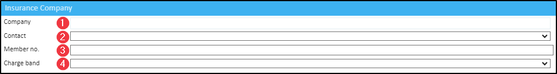
Contact Info*
This section allows capturing the following details:
Home phone - this field allows capturing the patient's home phone number (landline).
Work phone - this field allows capturing the patient's wok phone number.
Mobile - this field allows capturing the patient's mobile number. When entering a phone number, Meddbase will recognise the country a given number format belongs to, and a 'tick' symbol will appear when the correct number of characters is entered e.g.:
Email - this field allows capturing the patient's email address.
Work email - this field allows capturing the patient's work email address.
*Patient contact details can be queried and used in a variety of scenarios and workflows, incl.: Ad-hoc email/SMS messages, Automated Email/SMS messages Document/Email/SMS Templates and more
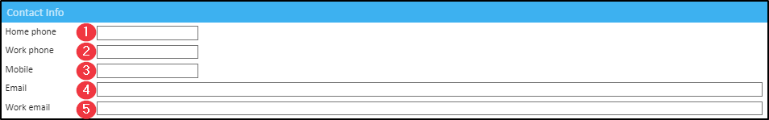
Home Address
This section allows capturing the following details:
Address - clicking in this field opens the address search window where you can type in the home address manually or use the Address lookup by postcode system feature.
Work Address
This section allows capturing the following details:
Use home address - this box when ticked will populate the work address with the patient's home address details.
Address - the address will be auto-populated with the patient's home address details if the Use home address box is ticked. Alternatively, clicking in this field opens the address search window where you can type in the work address manually or use the Address lookup by postcode system feature.
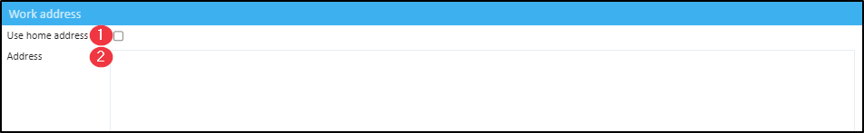
Gender Identity and Pronouns
This section allows capturing the following details:
Gender identity - this dropdown allows selecting the patient's Gender identity. Gender identity options can be added in Admin > Common Catalogues > Genders > +New gender.
Pronouns - this dropdown allows selecting the patient's Pronouns. Pronouns can be added in Admin > Common Catalogues > Pronouns > +New pronoun.